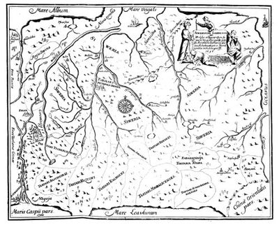

Map of Siberia, which encompasses all the borders as far as the whole of Great Asiatic Tartary, as well as Samoyedia and Nova Zembla. 1690., by Schleissing, 1692. Image: Gottingen. One of the 137 maps of Tartary in the TARTARY Project's collection at HKUST, catalogued on tartary.vercel.app. Its texts have not been transcribed yet.